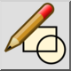

Editace bloku dle referencí
Panel nástrojů / Ikona:


Nabídka: Blok > Editace bloku dle referencí
Zkratka: B, D
Příkazy: blockeditfromreference | bd
Jedná se o automatický překlad.
Panel nástrojů / Ikona:


Pomocí tohoto nástroje lze blok upravit výběrem existujícího prvku reference bloku. To je užitečné a obvykle rychlejší, pokud neznáte název bloku, který chcete upravit.
Blok se otevře k úpravám. Chcete-li se vrátit do hlavního výkresu (nazývaného „ModelSpace”), upravte blok „ModelSpace” nebo spusťte nástroj „Upravit hlavní výkres” v nabídce „Blok”.